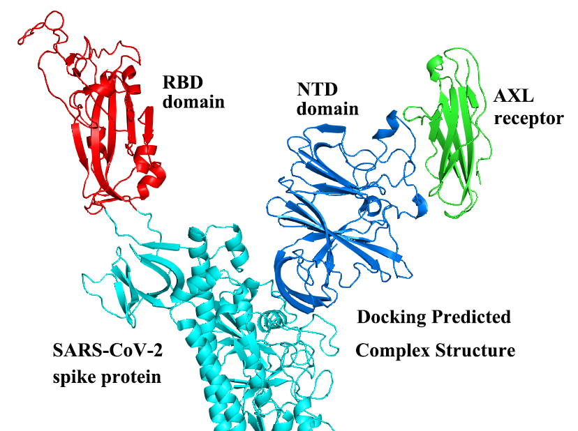
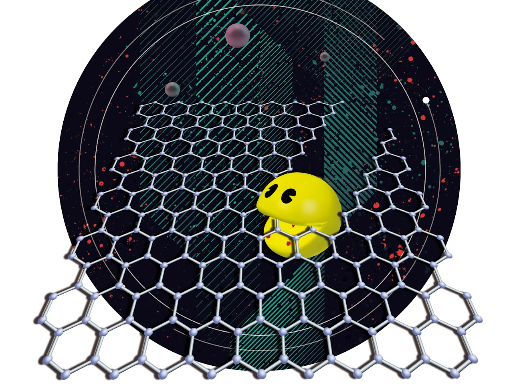
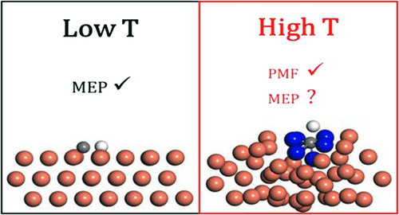
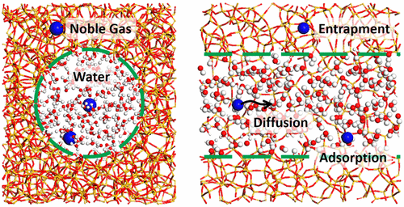

I am senior algorithm engineer in BioMap Inc. since May 23
where I collaborate with AI specialists to develop AI models for protein design. This marks my second attempt to delve
into the application of AI in science.
With a bachelor degree in physics, I did my PhD in condensed matter physics supervised by Prof.
Zhenyu Li in USCT
. During my doctoral studies, I utilized multiscale simulation methods, ranging from DFT at QM level, classical force field and
kinetic Monte Carlo simulation at mesoscale, to simulate graphene growth and cutting processes. (2011.09-2018.06)
In the final year of my PhD, my interest shifted towards AI for science, sparked by the emerging application of AI in force field.
But it was not going smoothly to apply overseas postdoc in AI4Material fields. After a half year gap,
I joined Dr. Jing Huang group at
Westlake Univ., as a postdoc and research
assistant. In this period, I studied protein dynamics and the interaction between biomoculecules by MD simulation with additive
and polarizable Drude force field and did a few force field development works. (2019.03-2023.05)
Join BioMap Inc.(Beijing) as senior algorithm engineer
BioMap Inc. (May '23 - Present)
Senior Algorithm Engineer
Physics methods evaluation in protein engineer and collaborate with AI specialists to explore the combination with AI models.
Westlake University | School of Life Science (Mar '19 - Aug '19 and Aug '21 - Apr '23)
Research Assistant Westlake Univ. & Westlake Institute for Advanced Study (Aug '19 - Aug '21)
postdoc
in Dr. Jing Huang group, working on MD simulation of protein and force field development
University of Science and Technology of China | School of Physics (Sep '11 - Jun '18)
PhD in Science / Major: Condensed Matter Physics
supervised by Prof. Zhenyu Li, working on multiscale simulation of graphene growth and cutting.
Fujian Normal University | College of Physics and OptoElectronics Technology (Sep '07 - Jun '11)
BSc in Physics
Awards: Secondary, First and Third Scholar in freshman, sophomore and junior year
AI + Molecular Simulation of Protein: Physical methods evalution and expore the combination with AI methods. Start to learn AI models and improve my coding skills.
Molecular Simulation of Biomolecules: MD Simulation of Protein, Polarizable Drude Force Field Parameter Development, Biomolecular Docking and Binding Affinity Estimation.

SARS-CoV-2 Spike Protein Docking with Candidate Receptors and Binding Affinity Estimation
As molecular simulation part of this work, we build a work flow to idetify potential receptors which may help ConV19 spike protein infect human cells. In this work flow, the complex struture of
receptors and full-length spike protein were determined with Haddock, then filtered via aligned full-length receptors. Selected strutures with top-ranking score were performed MD simulation and MM/PBSA method was adopted for binding affinity estimation. Following ACE2, AXL had stronger binding affinity than other calculated receptors which was consistent with Li's experimental observation.
Similarly, we also studied the docking of single-strand DNA aptamer with MET protein as collaborators with prof. Zhou Nie group. In this work, DNA aptamer's structure were prediced via MFold with
sequence from prof. Nie group. MET docking with HGF and DNA aptamer were performed with Haddock,repectively. Prediced MET/HGF complex struture was consistent with that in PDB database and shared the interface with predicted MET/DNA aptamer complex structure. This indicated the compition binding between HGF and DNA aptamer with MET, consistent with experimental observation.
Molecular Simulation of Material: Multiscale Simulation(DFT, MD and Kinetic Monte Carlo) and Free Energy Calculation(thermodynamics integration, umbrella sampling and metadynamics simulation) in Graphene.

Multiscale Simulation of Graphene Cutting by Nickle Nanoparticle
In this work, we carried out mutilscale simulation to investigate how Ni nanoparticle etching graphene into graphene nanoribbon. Starting from MD simulation with ReaxFF force field, we obtained
the understanding of how Ni nanoparticle break graphene C-C bond at high temperature at atomic level. Then, energy barrier of Ni atoms breaking C-C bond were quantitied with DFT calculation whose data comfirmed the transferability of ReaxFF force field. Furthermore, the free energy barries of the corresponding elemental etching processes were determined by metadynamics simualtion with ReaxFF force field. All these simulation indicated zigzag edge was much more difficult to be etched than armchair edge by Ni nanoparticle. In the last, the change of etching rate with nanoparticle size was studied with KMC simulation, obtaining R^2 dependent etching rate. A new explaination for this dependence was proposed, originating from the different ethcing rate of zigzag and armchair edge.

ab Initio MD Simulation of Methane Dissociation on Cu Surface
Methane dissociation on Cu at high temperature is the first step of graphene growth. Many works discussed the dissociation kinetics with static strcuture calculation. In this work, we used ab initial MD simulation to review how the free energy of methane and its unsaturated radicals dissociation on Cu surface at 300 K and 1300 K. Our results showed new CH dissociation path at 300K with lattice motion. And CHx radicals dissociation have lower energy barrier than that from calculation with perfect surface.

Noble Gas Diffusion in Silica Nanopore with MD Simulation
This is one of topics in geochemistry/geophysics where Dr. Ding worked in. In this work, we used MD simulation with CLAYFF force field to investigate the distribution of water and noble gas along with their diffusion in the silica nanopore.
Notice the temlpate from Yilin Wu's page which is a modification to Jon Barron's website and and Rishab Khincha's website. Then I modified Rishab Khincha's source to build my page whose source code can be found here and feel free to fork it if it helps.
{kind=link}